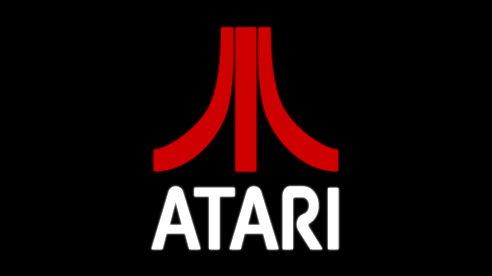
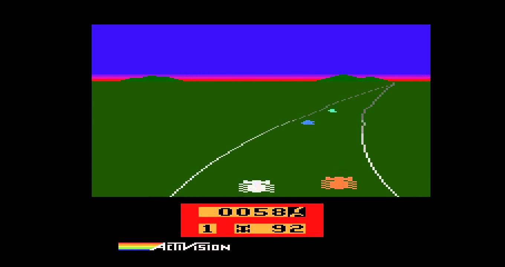
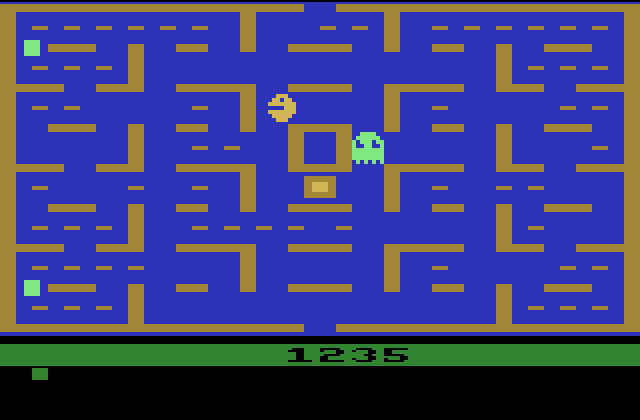
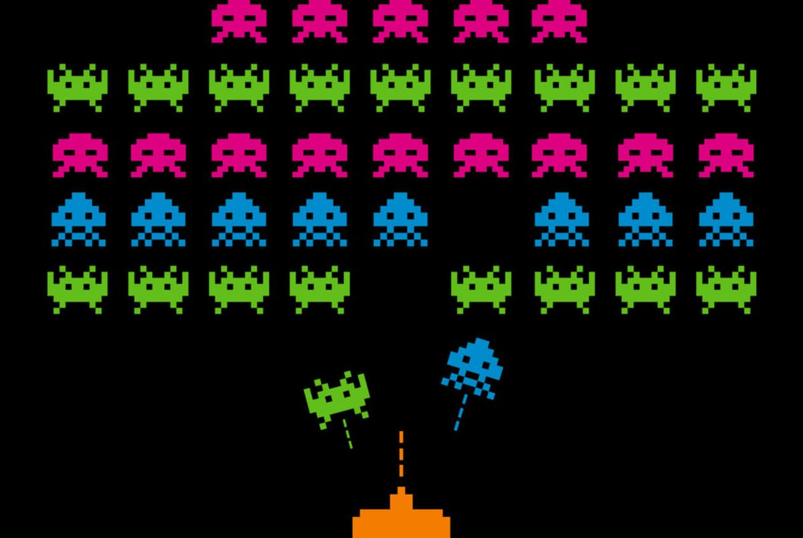
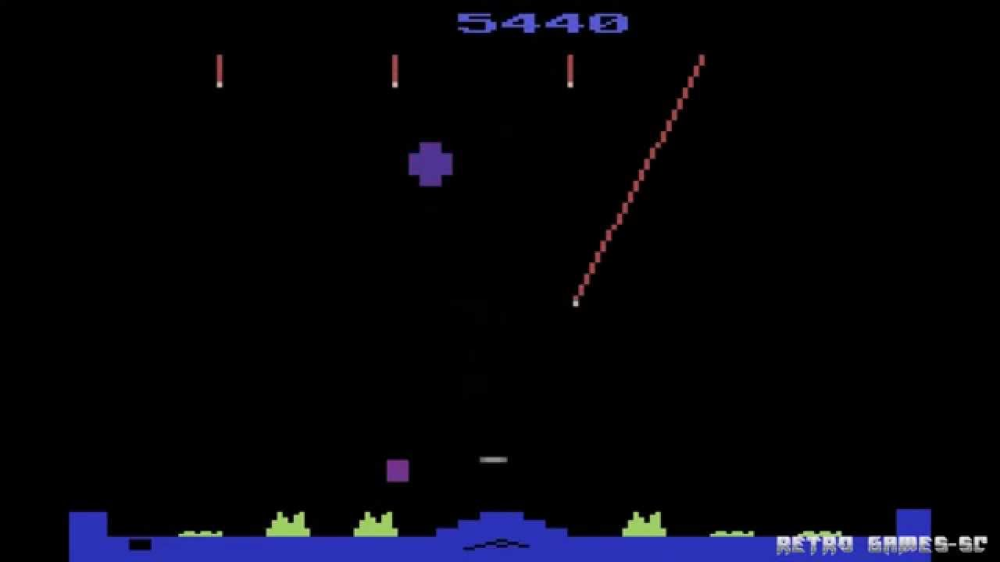
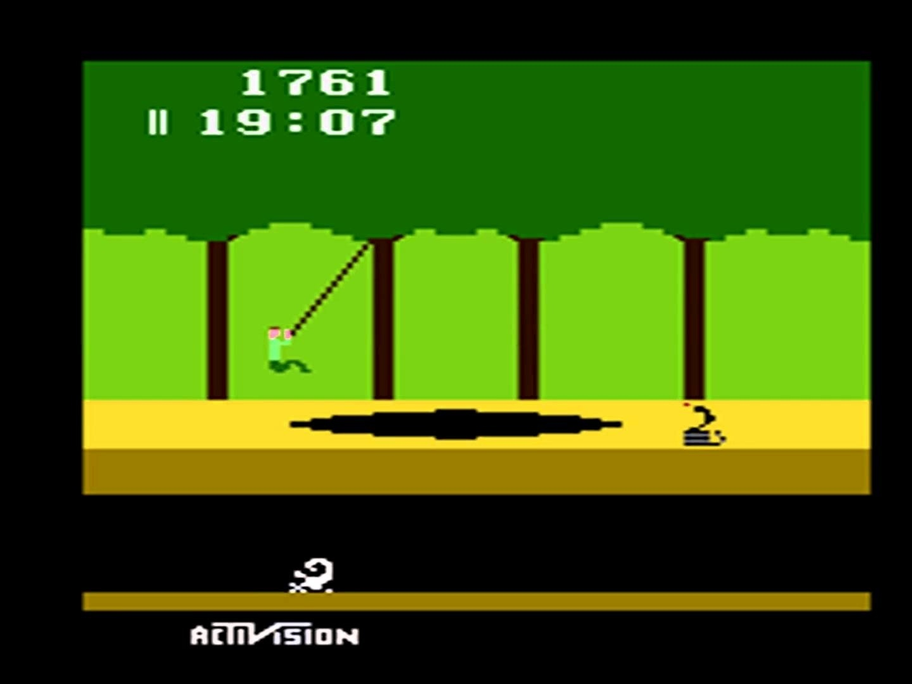
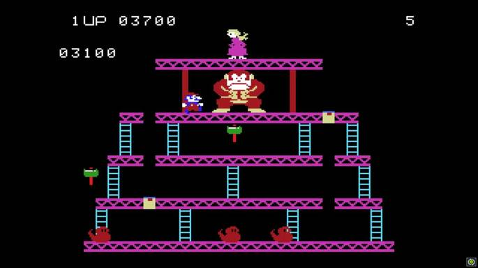
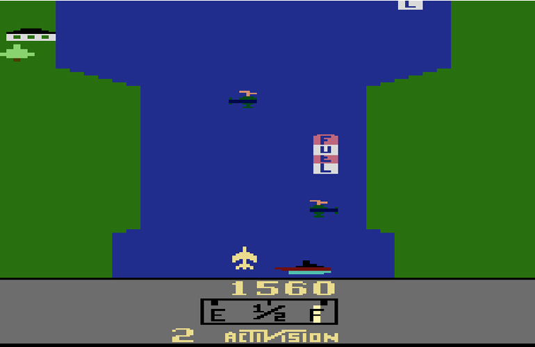
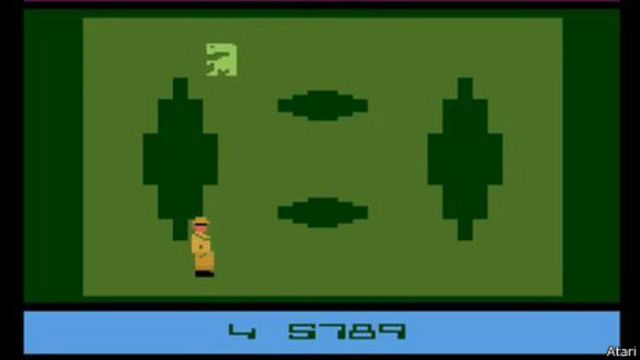
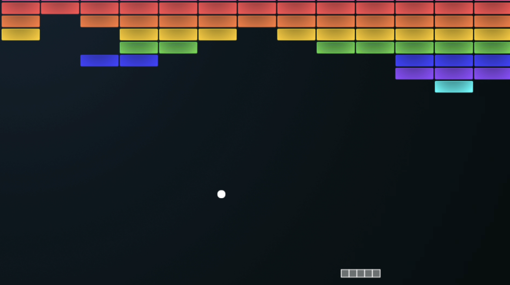

Atari, o início da popularidade.

© Atari
A Atari é uma das empresas de jogos eletrônicos mais antigas e reconhecidas do mundo, sendo um dos pioneiros na indústria de videogames desde a década de 1970. Fundada em 1972 por "Nolan Bushnell" e "Ted Dabney", a Atari rapidamente se tornou um dos nomes mais conhecidos na indústria de jogos eletrônicos.
O primeiro grande sucesso da Atari foi o jogo "Pong", que foi lançado em 1972 e se tornou um fenômeno mundial instantâneo. O jogo era simples, mas viciante, e rapidamente se tornou um sucesso em fliperamas e arcades em todo o mundo. Isso deu início a uma nova era de entretenimento eletrônico, e a Atari foi a principal responsável por popularizar esse tipo de entretenimento.
A popularidade da Atari continuou a crescer com a introdução do console Atari 2600 em 1977, que se tornou um grande sucesso entre os consumidores. O Atari 2600 apresentava gráficos coloridos e som de qualidade, o que o tornava uma grande inovação em relação aos consoles anteriores. A biblioteca de jogos do Atari 2600 também era impressionante, com títulos como "Space Invaders", "Pac-Man" e "Asteroids" sendo alguns dos jogos mais populares.
Com o sucesso do Atari 2600, a Atari se tornou uma das empresas mais bem-sucedidas da indústria de jogos eletrônicos na década de 1980. A empresa continuou a lançar novos consoles e jogos, incluindo o Atari 5200 e o Atari 7800, que apesar de terem sido menos bem sucedidos que o 2600, ainda ajudaram a manter a Atari relevante na indústria.
No entanto, a Atari também enfrentou desafios durante a década de 1980, incluindo uma grande crise do mercado de jogos eletrônicos em 1983. Isso resultou em uma queda nas vendas e popularidade da Atari, e a empresa foi posteriormente vendida para várias outras empresas.
Apesar dos desafios enfrentados ao longo do tempo, a Atari continua sendo uma das empresas mais icônicas e importantes da história dos jogos eletrônicos. Sua contribuição para a popularização dos jogos eletrônicos e a introdução de novas tecnologias ainda são reconhecidas e valorizadas hoje em dia.
Enduro: o clássico jogo de corrida

© Enduro
Se você é fã de jogos de corrida, com certeza já ouviu falar do Enduro. Lançado pela Activision em 1983 para o Atari 2600, este jogo se tornou um clássico instantâneo por sua jogabilidade viciante e desafio crescente.
O objetivo do Enduro é simples: você é um piloto de corrida que deve completar uma série de corridas em diferentes condições climáticas e de iluminação, acumulando pontos a cada corrida vencida. No entanto, o grande diferencial do Enduro é o seu sistema de dificuldade progressiva. A cada cinco corridas vencidas, a velocidade dos carros adversários aumenta, tornando cada vez mais difícil ultrapassá-los e evitar colisões.
Além disso, o Enduro também apresenta um elemento de estratégia: você tem um número limitado de dias para completar todas as corridas. Se você não conseguir vencer todas as corridas dentro desse período, o jogo termina e você tem que começar tudo de novo.
Mas não se deixe enganar pela idade do Enduro - ele ainda é um jogo incrivelmente divertido até hoje. Com sua jogabilidade simples e desafio crescente, o Enduro é um daqueles jogos que você sempre volta a jogar para tentar superar seu próprio recorde. E graças às versões emuladas disponíveis em diversos sites e até mesmo em consoles modernos, você pode reviver a experiência nostálgica do Enduro em qualquer lugar.
Então, se você está procurando um jogo de corrida clássico que ainda é divertido e desafiador, dê uma chance ao Enduro. Com certeza você não irá se arrepender.
Pac-Man: o jogo de labirinto mais icônico do Atari

© Pac-Man
Lançado em 1982, Pac-Man é um dos jogos mais conhecidos e populares da história dos videogames. Desenvolvido pela Namco, este jogo de labirinto estreou no Japão antes de se tornar um sucesso mundial.
O objetivo do Pac-Man é simples: o jogador controla um personagem amarelo redondo com uma boca grande que deve comer todas as pílulas em um labirinto enquanto evita fantasmas perigosos. Ao comer pílulas especiais, Pac-Man pode temporariamente se tornar invencível e comer os fantasmas, o que concede pontos extras.
Apesar de sua jogabilidade simples, o Pac-Man tornou-se um fenômeno cultural nos anos 80, com diversos produtos licenciados, desenhos animados e até uma música tema popular. O jogo foi tão popular que até hoje é facilmente reconhecido e jogado em todo o mundo.
Mas o que torna o Pac-Man tão divertido e viciante até hoje? Talvez seja a simplicidade de sua jogabilidade e o desafio crescente à medida que o jogador avança pelos labirintos, ou talvez seja a emoção de correr dos fantasmas enquanto tenta coletar as últimas pílulas antes que o tempo acabe. Seja qual for a razão, o Pac-Man continua sendo um jogo que atrai jogadores de todas as idades.
Graças à disponibilidade de emuladores e versões atualizadas do jogo, é possível jogar o Pac-Man em várias plataformas, incluindo consoles modernos, dispositivos móveis e PCs. Então, se você quer reviver a nostalgia dos jogos clássicos ou experimentar um jogo que resistiu ao teste do tempo, o Pac-Man é uma ótima escolha para começar.
Se você ainda não jogou o Pac-Man, ou quer experimentá-lo novamente, recomendamos que dê uma chance a este clássico jogo de labirinto. Você certamente não ficará desapontado.
Space Invaders: o jogo que popularizou os arcades

© Space Invaders
Lançado em 1978 pela Taito, Space Invaders é um dos jogos mais influentes e populares da história dos videogames. A jogabilidade simples, mas desafiadora, desafiou os jogadores a defender a Terra de uma invasão alienígena.
No jogo, os jogadores controlam uma nave espacial que se move de um lado para outro na parte inferior da tela enquanto atira em uma horda de alienígenas que avançam em sua direção. O objetivo é marcar o máximo de pontos possível, eliminando o maior número de inimigos antes que eles destruam sua nave ou alcancem o solo.
Space Invaders foi um sucesso imediato em arcades de todo o mundo, ajudando a popularizar os jogos eletrônicos e a cultura dos jogos. Foi um dos primeiros jogos a ter um placar de pontuação alta e a incentivar a competição entre jogadores.
O jogo também teve um impacto significativo na indústria de videogames, inspirando muitos outros jogos de tiro em primeira pessoa e influenciando o design de jogos modernos. Até hoje, a estética dos invasores alienígenas de Space Invaders é um símbolo icônico da cultura pop.
Embora a versão do jogo para Atari 2600 tenha gráficos mais simples em comparação com a versão dos arcades, a jogabilidade ainda é tão divertida e desafiadora quanto sempre foi. E com a disponibilidade de emuladores e versões atualizadas, é possível jogar Space Invaders em várias plataformas, incluindo consoles modernos e dispositivos móveis.
Se você ainda não jogou Space Invaders, ou quer experimentá-lo novamente, recomendamos que você experimente este jogo clássico que influenciou gerações de jogos de tiro. Você certamente não ficará desapontado.
Missile Command: o jogo de defesa estratégica para Atari

© Missile Command
Lançado em 1980 pela Atari, Missile Command é um dos jogos mais desafiadores e emocionantes do console Atari 2600. Nele, os jogadores são encarregados de proteger seis cidades de um ataque nuclear, usando um sistema de defesa estratégica.
O objetivo do jogo é destruir todos os mísseis inimigos antes que eles atinjam as cidades. O jogador usa um cursor para controlar a mira e atirar em mísseis inimigos, mas os recursos são limitados, então é necessário escolher sabiamente os alvos para economizar munição.
A jogabilidade de Missile Command é simples, mas a dificuldade aumenta à medida que o número de mísseis inimigos e suas velocidades aumentam. Além disso, o jogador também precisa lidar com mísseis teleguiados e bombas que caem do céu, tornando o jogo ainda mais desafiador.
Missile Command foi um grande sucesso na época do lançamento e é um dos jogos mais lembrados do Atari. Foi um dos primeiros jogos de defesa estratégica e influenciou muitos outros jogos do gênero. O jogo também apresentou gráficos impressionantes para a época, com explosões coloridas e detalhes realistas.
Hoje, o jogo Missile Command pode ser jogado em diversas plataformas, desde emuladores de Atari até consoles modernos. Embora o jogo possa parecer simples à primeira vista, a jogabilidade desafiadora e a intensidade do jogo mantêm os jogadores voltando para mais.
Se você está procurando um jogo desafiador e emocionante para jogar, Missile Command é uma ótima escolha. Experimente e veja se você tem o que é preciso para proteger suas cidades da destruição nuclear.
Pitfall!: O jogo de aventura e ação do Atari 2600

© Pitfall!
Lançado em 1982 pela Activision, Pitfall! é um dos jogos mais famosos do Atari 2600. O jogo foi desenvolvido por David Crane e apresenta um protagonista chamado Harry que precisa explorar uma selva perigosa para coletar tesouros e salvar sua vida.O objetivo do jogo é ajudar Harry a evitar armadilhas e obstáculos enquanto coleta tesouros ao longo do caminho. O jogador deve saltar sobre lagos de crocodilos, balançar em cipós e descer por poços para chegar ao final do jogo.A jogabilidade de Pitfall! é intensa e desafiadora, e apresenta gráficos coloridos e detalhados para a época. O jogo também apresenta uma trilha sonora envolvente que ajuda a criar uma atmosfera de aventura.Pitfall! foi um grande sucesso e um dos jogos mais vendidos do Atari 2600. O jogo inspirou muitos outros jogos de aventura e ação que seguiram seu exemplo e, desde então, se tornou um dos jogos mais icônicos da era dos videogames.Hoje, o jogo pode ser jogado em emuladores e versões atualizadas em diversas plataformas, incluindo consoles modernos e dispositivos móveis. E, mesmo décadas após seu lançamento, o jogo ainda é desafiador e divertido de jogar.Se você está procurando um jogo clássico de aventura e ação, Pitfall! é uma escolha fantástica. Experimente e veja se você consegue ajudar Harry a coletar todos os tesouros e escapar com vida da selva perigosa!
Donkey Kong: O clássico

© Donkey Kong
Lançado originalmente em 1981 pela Nintendo, Donkey Kong rapidamente se tornou um dos jogos mais icônicos da história dos videogames. O jogo foi portado para diversas plataformas, incluindo o Atari 2600, onde alcançou grande sucesso.Em Donkey Kong, o jogador assume o papel de Mario, um encanador que precisa resgatar sua namorada, Pauline, do gorila Donkey Kong. O jogo é dividido em quatro níveis, cada um com um desafio diferente para o jogador superar.O objetivo do jogo é navegar por obstáculos, escalar escadas, evitar inimigos e salvar Pauline. Donkey Kong lança barris e outros objetos para impedir o progresso do jogador, tornando o jogo mais desafiador.O jogo apresenta gráficos coloridos e detalhados, e uma trilha sonora marcante que se tornou um clássico instantâneo. A jogabilidade simples e intuitiva de Donkey Kong tornou o jogo acessível para jogadores de todas as idades e níveis de habilidade.Donkey Kong foi um enorme sucesso comercial e crítico, e é frequentemente citado como um dos jogos mais influentes da história dos videogames. O jogo inspirou muitos outros jogos de plataforma e também estabeleceu Mario como um dos personagens mais amados da cultura pop.Hoje, o jogo Donkey Kong pode ser jogado em emuladores de Atari e outras plataformas modernas. E, mesmo após décadas de seu lançamento, o jogo continua sendo um dos jogos mais divertidos e emocionantes do Atari 2600.Se você está procurando um jogo clássico de plataforma com desafios emocionantes e uma história cativante, Donkey Kong é uma ótima escolha. Experimente e veja se você pode salvar Pauline do gorila impiedoso!
River Raid: O jogo de tiro clássico

© River Raid
Lançado em 1982 pela Activision, River Raid é um dos jogos mais famosos do Atari 2600. O jogo foi desenvolvido por Carol Shaw e apresenta um avião de combate que precisa atravessar um rio perigoso, destruir bases inimigas e evitar colisões com obstáculos ao longo do caminho.
O objetivo do jogo é completar a missão de destruir as bases inimigas sem deixar o avião ser destruído. O jogador deve voar pelo rio, desviar de pontes, navios e outras ameaças, coletar combustível para manter o avião voando e atirar nos inimigos para destruí-los.
A jogabilidade de River Raid é rápida e desafiadora, com inimigos e obstáculos surgindo a cada momento. O jogo apresenta gráficos coloridos e detalhados para a época, e uma trilha sonora empolgante que ajuda a criar uma atmosfera de tensão.
River Raid foi um grande sucesso e um dos jogos mais vendidos do Atari 2600. O jogo influenciou muitos outros jogos de tiro que seguiram seu exemplo e, desde então, se tornou um dos jogos mais icônicos da era dos videogames.
Hoje, o jogo pode ser jogado em emuladores e versões atualizadas em diversas plataformas, incluindo consoles modernos e dispositivos móveis. E, mesmo décadas após seu lançamento, o jogo ainda é desafiador e divertido de jogar.
Se você está procurando um jogo clássico de tiro cheio de ação e adrenalina, River Raid é uma escolha fantástica. Experimente e veja se você consegue destruir as bases inimigas e completar a missão com sucesso!
E.T. the Extra-Terrestrial: A história de um dos jogos mais controversos do Atari 2600

© E.T. the Extra-Terrestrial
Lançado em 1982 pela Atari, E.T. the Extra-Terrestrial foi um jogo baseado no filme homônimo de Steven Spielberg. O jogo foi desenvolvido em apenas cinco semanas e apresentava um enredo onde o jogador assumia o controle do personagem titular, E.T., tentando encontrar peças de um telefone cósmico para chamar sua nave e voltar para casa.
Infelizmente, o jogo foi mal recebido tanto pelos jogadores quanto pelos críticos. Muitos consideravam a jogabilidade do jogo confusa e difícil de entender, enquanto outros achavam que o jogo era entediante e não oferecia o suficiente para manter o interesse do jogador. Ainda assim, a Atari esperava que o jogo se tornasse um grande sucesso, baseado na popularidade do filme E.T.
Devido às baixas vendas do jogo, a Atari decidiu enterrar milhares de cópias do jogo em um aterro sanitário no Novo México, tornando-se um dos mitos mais famosos da história dos videogames.
No entanto, apesar do fracasso comercial e crítico, E.T. the Extra-Terrestrial deixou um legado na história dos videogames. O jogo é frequentemente citado como um exemplo de como um jogo pode ser prejudicado pela pressa no desenvolvimento, e muitos jogadores consideram o jogo como uma espécie de "rótulo de qualidade" para jogos ruins.
Em retrospectiva, é fácil entender por que E.T. the Extra-Terrestrial falhou em cativar jogadores e críticos. A jogabilidade era confusa, a trilha sonora era irritante e o jogo não tinha nada de especial em termos de gráficos ou história.
Hoje, o jogo é um item de colecionador raro e muitas cópias foram recuperadas do aterro sanitário do Novo México. Apesar de sua reputação, alguns jogadores ainda encontram diversão em E.T. the Extra-Terrestrial, seja por nostalgia ou simples curiosidade.
Em resumo, E.T. the Extra-Terrestrial é um jogo controverso e polêmico que deixa um legado duradouro na história dos videogames. Se você está procurando um jogo clássico para jogar, provavelmente é melhor procurar em outro lugar, mas para os colecionadores e historiadores de jogos, E.T. the Extra-Terrestrial continua sendo um jogo fascinante e intrigante.
Breakout: A história do jogo que inspirou uma geração de jogos de arcade

© Breakout
Lançado em 1976, Breakout foi um jogo de arcade desenvolvido pela Atari e projetado por Nolan Bushnell e Steve Bristow. O objetivo do jogo era simples: o jogador controlava uma raquete que movia horizontalmente na parte inferior da tela e deveria destruir uma parede de tijolos acima usando uma bola.
O jogo rapidamente se tornou um sucesso, graças à sua jogabilidade viciante e desafiadora. O jogo também era fácil de entender e jogar, tornando-o popular entre jogadores de todas as idades. Foi um dos jogos mais populares do Atari, e muitos o consideram como o precursor de outros jogos de arcade como Arkanoid, Brick Breaker e outros.
O sucesso do jogo inspirou muitos outros jogos semelhantes, e muitas empresas tentaram imitar o sucesso de Breakout com jogos semelhantes. O jogo também levou a uma série de jogos de console que usaram uma jogabilidade semelhante, incluindo o popular jogo de 1986, Alleyway, para o Game Boy da Nintendo.
Além disso, o jogo Breakout também foi um marco importante na carreira de Steve Jobs, co-fundador da Apple Computer. Jobs trabalhou para a Atari como designer de jogos e foi responsável pelo desenvolvimento do design do jogo Breakout. Jobs se comprometeu a entregar o projeto em um prazo muito curto e prometeu a Bristow que o faria em quatro dias. Jobs, então, recorreu ao engenheiro Steve Wozniak, um amigo de longa data, para ajudá-lo a projetar o hardware para o jogo.
Wozniak conseguiu projetar um circuito que reduziu o número de chips necessários para o jogo, tornando o projeto de Jobs viável. O jogo foi concluído em tempo recorde e foi um grande sucesso, ajudando a estabelecer a reputação de Jobs como um talentoso designer de jogos.
Em resumo, Breakout é um jogo que não apenas foi um grande sucesso em sua época, mas também inspirou uma geração de jogos de arcade e influenciou a indústria de jogos eletrônicos como um todo. O jogo continua sendo popular entre jogadores de todas as idades e é considerado um clássico da era do Atari. Se você ainda não jogou Breakout, vale a pena experimentá-lo e ver por que ele ainda é tão popular até hoje.